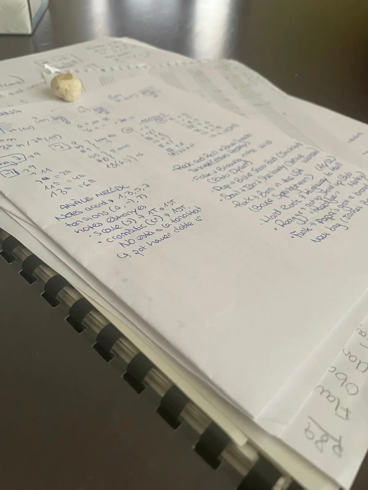

Cuando se acerca una prueba importante, es normal sentir nervios.
Puede que notes que te cuesta concentrarte, que tienes más presión, que duermes peor o que te cuesta descansar sin sentir culpa.
Y si además tienes la sensación de que te juegas mucho, los pensamientos pueden empezar a ir muy rápido.
“¿Y si me quedo en blanco?”
“¿Y si no he estudiado suficiente?”
“¿Y si no sale como espero?”
Tener nervios antes de una prueba no significa que lo estés haciendo mal.
Significa que es una situación importante para ti.
La presión constante también puede bloquear
Cuando se acerca una prueba, es fácil pensar que cuantas más horas estudies, mejor.
Pero no siempre funciona así.
Cuando el cuerpo y la mente están demasiado activados, puede costar retener información, organizar ideas o recordar lo que ya sabías.
A veces no es falta de estudio.
Es saturación.
Y cuando estás saturado/a, exigirte todavía más puede hacer que te bloquees aún más.

Descansar también forma parte de prepararte
Descansar no es perder el tiempo.
Dormir, comer bien, moverte un poco o hacer pequeñas pausas también forma parte de prepararte.
El cerebro necesita momentos de descanso para asimilar, ordenar y recuperar energía.
Eso no significa dejarlo todo de lado.
Significa entender que prepararte no es solo estudiar.
También es cuidar el estado con el que llegas a la prueba.
Compararte no suele ayudar
En épocas de exámenes es muy fácil compararte.
Con quien dice que ya lo lleva todo preparado. Con quien estudia muchas horas. Con quien parece tenerlo todo bajo control.
Pero cada persona tiene su ritmo, su manera de estudiar y su forma de gestionar los nervios.
Mirar constantemente cómo lo hacen los demás puede aumentar la presión y hacer que dudes más.
No necesitas estudiar como todo el mundo. Necesitas encontrar lo que te ayuda a ti.
Qué puedes hacer estos días
No hace falta hacer grandes cambios cuando quedan pocos días.
Pero sí puedes intentar cuidar algunas cosas básicas:
- Organizar lo que queda en bloques pequeños
- Hacer pausas breves para no saturarte
- Dormir lo mejor posible
- No estudiar hasta el agotamiento
- Evitar compararte constantemente
- Recordar que los nervios no significan que no puedas hacerlo
También puede ayudar bajar un poco el nivel de exigencia.
No se trata de hacerlo perfecto.
Se trata de llegar con la mente lo más clara posible.
No todo depende de una prueba
Una prueba importante puede tener peso, y es normal que quieras que salga bien.
Pero no define todo tu valor, ni toda tu capacidad, ni todo tu futuro.
A veces, cuando la presión es muy alta, parece que todo dependa de ese momento.
Y eso hace que sea todavía más difícil mantener la calma.
Una prueba puede ser importante, pero no es toda tu vida.
Estos días, además de estudiar, intenta también cuidarte un poco.
Porque llegar con algo más de calma también forma parte de prepararte.
Referencias
- American Psychological Association. (2024). Stress effects on the body. https://www.apa.org/topics/stress/body
Si la presión, los nervios o la ansiedad te bloquean, no tienes por qué gestionarlo solo/a.
Podemos verlo con calma y encontrar maneras de ayudarte a regular lo que estás viviendo. La primera conversación es gratuita y sin compromiso.
Reserva una llamada de 15 minutos